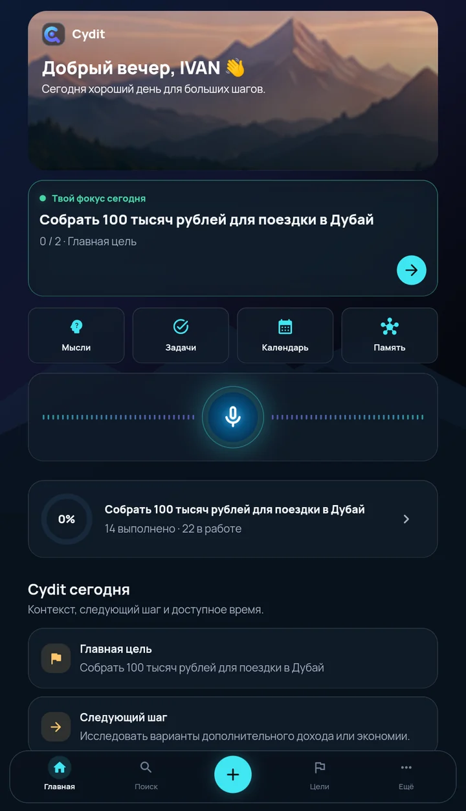
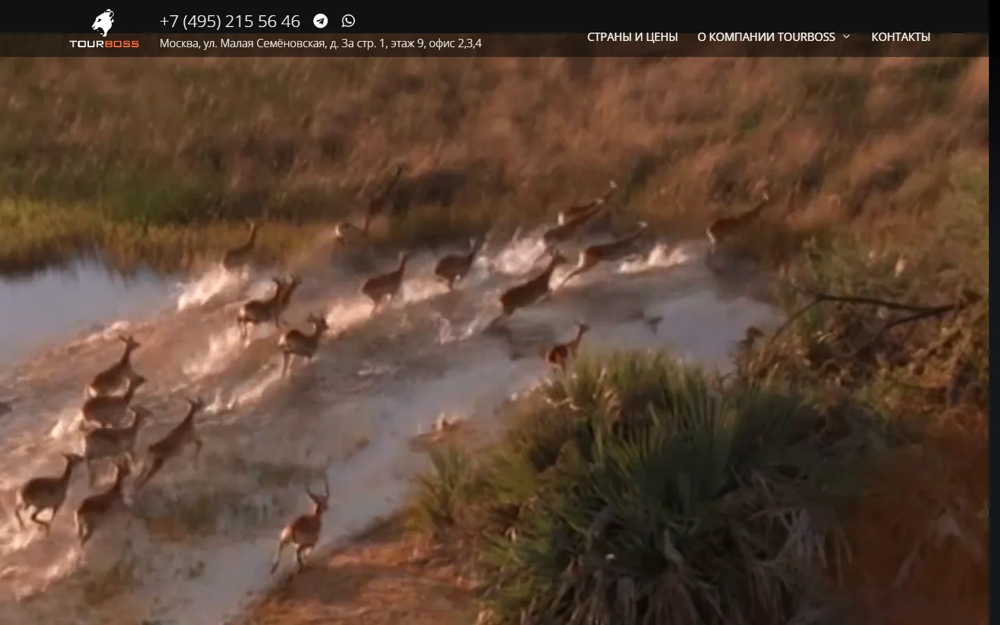
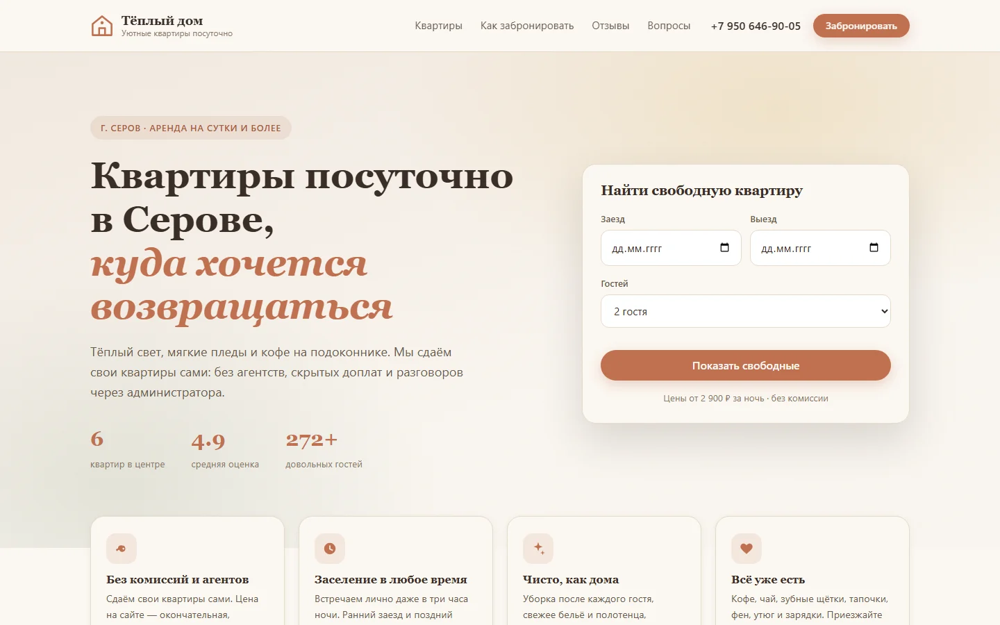
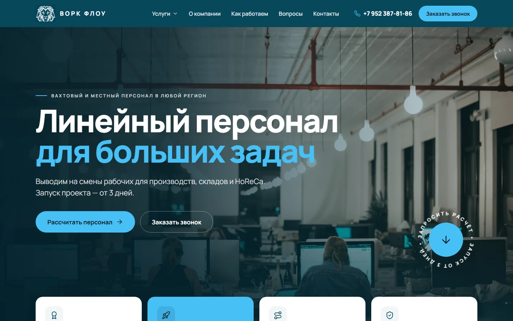
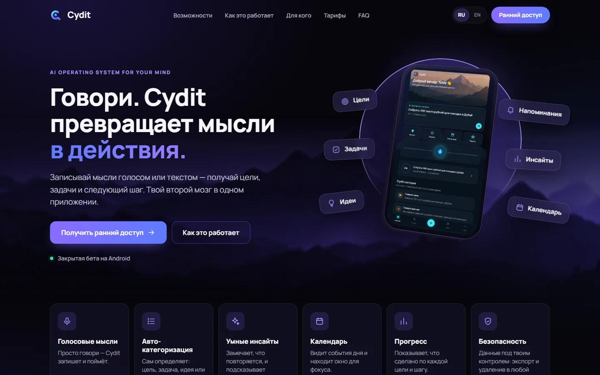
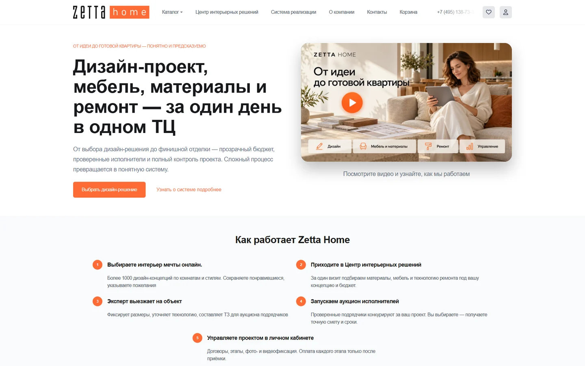
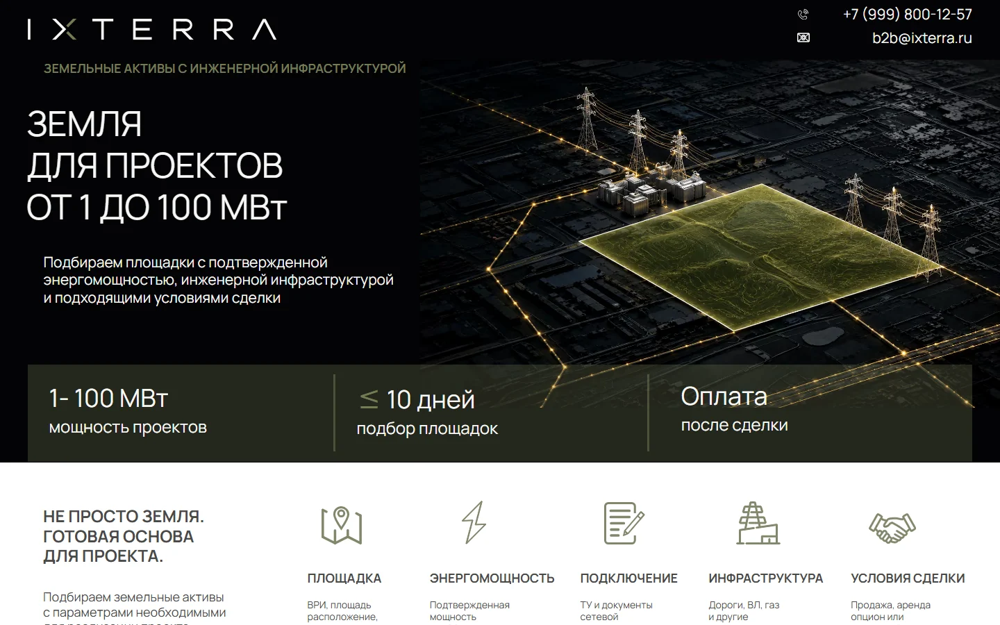

Сайт студии танцев с ботом для заявок
Студия танцев «А-Линия», Москва
Разработка под ключ · удалённо по всей России
Делаю сам от разбора задачи до запуска: сайт с заявками, Telegram-бот, парсер, связка 1С с CRM, мобильное приложение. Ниже — 27 проектов с цифрами и цены по каждой услуге.
Работаю как ИП: договор, счёт, акт · 6 лет в разработке

На экране — Cydit, приложение нашей команды
Услуги
Сайт с заявками в Telegram и админкой
от 15 000 ₽Лендинг по Figma или PDF, точно по макету
от 3 000 ₽Бот для заявок, записи и рассылок
от 5 000 ₽Данные с сайтов и маркетплейсов в Excel
от 3 000 ₽Обмен между 1С, CRM, сайтом и ботом
от 8 000 ₽Приложение для Android и iOS
от 12 000 ₽Сервер, HTTPS, автовыкладка, бэкапы
от 3 000 ₽Таблицы Excel — в диаграммы и слайды
от 5 000 ₽Работы
Заказчики разрешили показать эти работы — каждую можно открыть и посмотреть вживую.
Студия танцев «А-Линия», Москва

Ремонт котлов «ГазРемонт», Москва и область

Пластический хирург, Москва

Туроператор TOURBOSS, Москва

Посуточная аренда квартир, Серов

Пассажирские перевозки, Приморье

Кадровое агентство ВОРК ФЛОУ, Санкт-Петербург

Продукт нашей команды

Zetta Home · ремонт и мебель

IXTERRA · земля для проектов
Кейсы
Заказчика называю только с его согласия, в остальных кейсах — отрасль и то, что было сделано. Нажмите «Как сделано», чтобы увидеть подробности.
Многостраничный сайт с расписанием и тренерами. Заявки с формы и из бота приходят администратору в Telegram и ведутся по статусам.
Студии нужен был сайт, который объясняет родителям и взрослым, чем занимаются в зале, и доводит до записи на бесплатное пробное занятие.
Сайт под поиск и рекламу: на запрос «ремонт котла» в любом пункте Подмосковья находится своя страница с картой выезда. Заявки сразу уходят мастерам в Telegram и на почту.
Сервису нужен был сайт, который приводит заявки из поиска и рекламы по всей Московской области, а не только по запросу «ремонт котлов в Москве».
Сайт с админкой: врач сам меняет тексты, услуги и галерею. Заявки приходят в Telegram-бот.
Врачу нужен был личный сайт, который можно наполнять без программиста и показывать пациентам до полного запуска.
Сайт туроператора: видео на первом экране, страны и цены, фотоальбомы и фильмы, отзывы клиентов. Наполнение менеджеры обновляют сами.
Показать направления и цены так, чтобы клиент дошёл до заявки, а сотрудники обновляли туры и материалы без программиста.
Гость выбирает даты в календаре и сразу видит цену со скидкой. Владелец получает заявку в Telegram и на почту, а в админке видит выручку и загрузку.
Витрина квартир, которая принимает брони без звонков и показывает владельцу, как работает каждая квартира.
Пассажир выбирает рейс, остановки и кресло на схеме салона и сразу видит цену. Бронь доступна и в боте мессенджера MAX: база мест у сайта и бота общая.
Перевозчику на маршруте Уссурийск — Шмаковка нужно было продавать места без звонков и не сажать двух пассажиров на одно кресло.
Многостраничный сайт аутсорсинга линейного персонала: услуги для производств, складов и HoReCa, форма заявки на каждой странице. Заявки приходят на почту компании.
Агентству нужен был сайт, который объясняет заказчику, какой персонал и как быстро он выйдет на смену, и собирает заявки без сложной настройки.
Продуктовый сайт: возможности, экраны приложения, тарифы, вопросы и ответы, форма раннего доступа. Оформление снято с темы самого приложения.
Сайт для приложения, на котором нет ни одного выдуманного факта: всё сверено с тем, что приложение умеет на самом деле.
Приложение превращает записанные мысли — текстом или голосом — в память, цели, задачи и планы. Сделано командой из трёх человек.
Продукт нашей команды из трёх человек: помощник, который разбирает поток мыслей и подсказывает следующий шаг.
Страница высотой почти 17 000 px свёрстана на чистых HTML, CSS и JS. Размеры, шрифты и картинки взяты из Figma через API, а не на глаз.
Заказчик просил только HTML, CSS и JS, картинки из самой Figma и точное попадание в макет на компьютере и телефоне.
Заказчик прислал только PDF. Размеры, цвета, начертания шрифта, иконки и логотип извлечены из файла программно — вёрстка совпадает с макетом.
Сверстать лендинг по PDF-экспорту макета, когда доступа к исходнику в Figma нет.
Материалы из презентаций и PDF стали статьями для мобильного приложения. Схемы и таблицы перерисованы в SVG и сами подстраиваются под тему приложения.
Перенести обучающие материалы в приложение так, чтобы схемы читались на телефоне и выглядели родными в светлой и тёмной теме.
Письмо-приглашение с кнопкой регистрации: табличная вёрстка, которая одинаково открывается в почтовых программах, включая Outlook.
Сверстать письмо, которое не разваливается в почтовых клиентах и читается с телефона.
Бот берёт расписание с сайта техникума, показывает пары со временем звонков и каждый вечер присылает расписание на завтра.
Студентам приходилось каждый день открывать сайт и искать свою группу. Нужен был бот, который присылает расписание сам.
Приложение внутри Telegram: регистрация гостей, розыгрыш, раздел для партнёров и админка организатора. Открывается и в обычном браузере.
Дать гостям фестиваля одно приложение вместо бумажных анкет, а организатору — управление участниками и розыгрышем.
Бот ведёт экономику ролевой игры: ресурсы, население, реформы игроков. Панель с кнопками вместо десятка команд.
Заказчик пришёл без технического задания, с идеей игры. Собрал механику по короткому описанию и согласовал её по ходу.
Кабинет продавца показывал неактуальные остатки. Программа собирает их с витрины по списку артикулов и складывает в готовый отчёт.
Быстро получать настоящие остатки по всему ассортименту, не открывая сотни карточек вручную.

Программа сама обходит уценку DNS в нужных категориях и присылает в бот MAX новые товары и снижение цены — с историей цен и ссылкой на товар.
Заказчику нужно было первым узнавать о выгодной уценке, не просматривая сайт магазина вручную по нескольку раз в день.
Список потенциальных клиентов в Excel, собранный из открытых источников — без покупки баз и без обхода капчи.
Дать отделу продаж список организаций города, которым услуга нужна регулярно.
Инструмент собирает опубликованные результаты из 11 обсуждений в соцсети. Итоговая выгрузка размечена по единому правилу для обучения ИИ-агента.
Исследователям нужно было проверить опубликованные результаты учеников онлайн-школ и получить чистый размеченный набор данных.
Покупка в кассе 1С начисляет бонусы, клиент видит баланс в боте, менеджер — в карточке CRM.
Запустить бонусную программу с уровнями так, чтобы расчёт всегда совпадал с договором, а данные не вводились дважды.
Запуск рассылок во ВКонтакте по городам сети: сбор базы подписчиков, приветственная цепочка, механики подписки.
Сеть вела сообщества по городам, но не пользовалась рассылками. Нужно было запустить их везде и проверить, что работает.
Клиент к стороннему маркетинговому хабу: запускает выгрузку Метрики, повторяет запросы при обрывах и объясняет ошибки доступа.
Получать выгрузки Метрики через чужой сервис, у которого документация расходится с тем, как он работает на самом деле.
После переезда на другой хостинг обновления перестали доходить до сервера. Нашёл три причины — выкладка снова идёт сама после каждой правки.
Команда правила код, но на боевой сервер изменения не попадали: автоматическая выкладка падала с ошибкой.
Реестры на русском и английском с разной структурой приведены к общему виду и сопоставлены. Результат — презентация на корпоративном шаблоне: только диаграммы и цифры.
Сравнить оценку рисков между шестью предприятиями, у которых реестры ведутся по-разному и на двух языках.
По трём картинкам-образцам собраны три готовые презентации с редактируемым текстом. Фотографии улучшены нейросетью.
Заказчику понравились чужие презентации на картинках. Нужно было получить такие же, но настоящие — чтобы менять текст.
Веб-приложение: доска задач, таймер, списание часов и итог за месяц с выгрузкой для Excel.
Свой инструмент, чтобы считать часы по заказам и не терять время при закрытой вкладке.
Отзывы
19 отзывов на Профи.ру, средняя оценка 5,0 из 5. Тексты перенесены без правок — каждый можно проверить в профиле на Профи.ру.
Спасибо Сергею, благодаря ему у меня появился мой первый сайт о компании. Сергей учел все мои правки и пожелания. Специалиста рекомендую и буду еще обращаться при необходимости.
АлисаСоздание сайта-визитки
Оставляю отзыв Сергею Гордееву ,отличный специалист,профи в своем деле.
Задачу выполнил в полном объеме!
Рекомендую данного специалиста.
В дальнейшем буду обращаться только к нему !
ДенисРазработка ботов Telegram
Я вообще не понимаю в создании сайта ни чего. Решил проверить, на авось. Заказал для будущей работы сайт, Сергей все до полочки мне разложил, в течении суток готов и сайт и чат бот в максе и я рад, что теперь в паутине засветился. Спасибо огромное Сергей. Вы настоящий профессионал в своем деле. Удачи!
АлексейLanding page
Спасибо большое за такой прекрасный сайт, который вы мне сделали! Все мои запросы, абсолютно все были учтены! На всем протяжении создания я вводила корректировки, которые вы все учли, для меня это было важно, чтобы вы всегда были на связи, потому что я очень переживала. Безмерно вам благодарна!
ЭлеонораСоздание сайта-визитки
очень умный парень быстро помог мне решить сложную задачу и объяснил как в дальнейшем действовать, буду еще обращаться.
СуренLanding page • Создание сайтов на WordPress
Обратился за доработкой и запуском сайта на WordPress. Сергей показал себя с самой лучшей стороны, своевременно был на связи, решал все задачи, предлагал идеи. Видно, что человек понимает, что делает и делает на совесть. Сделали главную, каталог, технические страницы, корзину, все по ТЗ.
Благодарю вас за проделанную работу, Сергей, всех благ и процветания вашему делу.
ВадимВерстальщики • Вёрстка сайтов
Как работаю
Принципы
Я индивидуальный предприниматель: заключаем договор, выставляю счёт, по итогам подписываем акт. Подходит и компаниям, и частным заказчикам.
Крупные задачи делю на этапы: вы платите за результат, который уже видите.
Домен, хостинг и репозиторий оформляются на вас. Проект можно передать другому разработчику без моего участия.
Как обновить, где поменять текст, куда смотреть, если что-то не работает — в файле рядом с проектом.
Перед стартом проверяю, выполнима ли задача, и называю ограничения заранее, а не после оплаты.
Называю заказчика и показываю сайт, только если он разрешил. Ваш проект тоже не появится здесь без вашего разрешения.
Вопросы
У каждой услуги есть ориентиры — они на её странице. Точную цену называю после разбора задачи и фиксирую письменно. Она не меняется, пока не меняется задача.
Да. Я индивидуальный предприниматель: заключаем договор, выставляю счёт, по итогам подписываем акт. Так можно работать и компаниям, и частным заказчикам. Реквизиты: ИП Гордеев Сергей Андреевич · ИНН 663299015699 · ОГРНИП 326965800222296.
Да. Вы общаетесь напрямую с тем, кто делает работу: без менеджеров и без передачи задачи третьим лицам.
По счёту от ИП. Крупные задачи делю на этапы с оплатой по каждому: вы платите за результат, который уже видите. Небольшие — по договорённости.
Называю заказчика и показываю сайт только с его согласия. В остальных кейсах — отрасль, задача, решение и цифры. Ваш проект тоже не появится здесь без вашего разрешения.
Передаю код, доступы и инструкцию и остаюсь на связи. Мелкие вопросы решаю без формальностей, доработки — отдельной задачей.
Нет. Работаем в переписке и на созвонах, промежуточный результат вы видите на рабочей ссылке. Так сделаны все проекты на этой странице.
Связаться
Техническое задание не нужно. Задам вопросы и вернусь с составом работ, сроком и ценой. Работаю удалённо по всей России, по договору от ИП.
Пары фраз о задаче достаточно. Отвечаю с 9:00 до 21:00 по Москве.